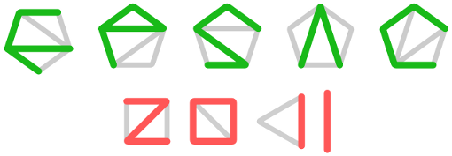

Local proceedings
Here you can download all papers in one large pdf-file or
individually, below:
- Philippe Flajolet, the Father of Analytic Combinatorics, Bruno Salvy, Bob Sedgewick, Michèle Soria, Wojtek Szpanekowski and Brigitte Vallée
- Supercharacters, symmetric functions in noncommuting variables, extended abstract, Marcelo Aguiar and 25 more
- Lagrange's Theorem for Hopf Monoids in Species, Marcelo Aguiar and Aaron Lauve
- Gelfand–Tsetlin Polytopes and Feigin–Fourier–Littelmann–Vinberg, Polytopes as Marked Poset Polytopes, Federico Ardila, Thomas Bliem and Dido Salazar
- Hyperplane Arrangements and Diagonal Harmonics, Drew Armstrong
- The Shi arrangement and the Ish arrangement, Drew Armstrong and Brendon Rhoades
- Tree-like tableaux, Jean-Christophe Aval, Adrien Boussicault and Philippe Nadeau
- The # product in combinatorial Hopf algebras, Jean-Christophe Aval, Jean-Christophe Novelli and Jean-Yves Thibon
- Powers of the Vandermonde determinant, Schur functions, and the, dimension game, Cristina Ballantine
- The Murnaghan-Nakayama rule for k-Schur functions, Jason Bandlow, Anne Schilling and Mike Zabrocki
- On the enumeration of column-convex permutominoes, Nicholas R. Beaton, Filippo Disanto, Anthony J. Guttmann and Simone Rinaldi
- Primitive orthogonal idempotents in R-trivial monoids, Chris Berg, Nantel Bergeron, Sandeep Bhargava and Franco Saliola
- Deformed diagonal harmonic polynomials for complex reflection, groups, François Bergeron, Nicolas Borie and Nicolas M. Thiéry
- Enumerating projective reflection groups, Riccardo Biagioli and Fabrizio Caselli
- Finite Eulerian posets which are binomial or Sheffer, hoda bidkhori
- Rational smoothness and affine Schubert varieties of type $A$, Andrew Crites and Sara Billey
- A tight colored Tverberg theorem for maps to manifolds, Pavle V. M. Blagojevic, Benjamin Matschke and Günter M. Ziegler
- Shortest path poset of Bruhat intervals, Saul Blanco
- Relative Node Polynomials for Plane Curves, Florian Block
- Arc Spaces and Rogers-Ramanujan Identities, Clemens Bruschek, Hussein Mourtada and Jan Schepers
- Partition and composition matrices: two matrix analogues of set, partitions, Anders Claesson, Mark Dukes and Martina Kubitzke
- Path tableaux and combinatorial interpretations of immanants for, class functions on Sn, Sam Clearman, Brittany Shelton and Mark Skandera
- Statistics on staircase tableaux, eulerian and mahonian statistics, Sylvie Corteel and Sandrine Dasse-Hartaut
- Polynomial functions on Young diagrams arising from bipartite, graphs, Maciej Dołęga and Piotr Śniady
- Critical Groups of Simplicial Complexes, Art Duval, Caroline Klivans and Jeremy Martin
- The topology of restricted partition posets, Richard Ehrenborg and JiYoon Jung
- Allowed patterns of beta-shifts, Sergi Elizalde
- Polytopes from Subgraph Statistics, Alexander Engström and Patrik Norén
- Dual combinatorics of zonal polynomials, Valentin Féray and Piotr Śniady
- A Littlewood-Richardson type rule for row-strict quasisymmetric, Schur functions, Jeffrey Ferreira
- $K$-classes for matroids and equivariant localization, Alex Fink and David Speyer
- Counting Shi regions with a fixed separating wall, Susanna Fishel, Eleni Tzanaki and Monica Vazirani
- Cofree compositions of coalgebras, Stefan Forcey, Aaron Lauve and Frank Sottile
- Dissimilarity Vectors of Trees and Their Tropical Linear Spaces, Benjamin Iriarte Giraldo
- Algebraic and combinatorial structures on Baxter permutations, Samuele Giraudo
- The pentagram map and Y-patterns, Max Glick
- On the evaluation of the Tutte polynomial at the points (1,-1) and (2,-1), Andrew Goodall, Criel Merino, Anna de Mier and Marc Noy
- Enumeration of minimal 3D polyominoes inscribed in a rectangular, prism, Alain Goupil and Hugo Cloutier
- Cyclic sieving phenomenon in non-crossing connected graphs, Alan Guo
- A polynomial expression for the Hilbert series of the space of, diagonal harmonics, Jim Haglund
- The enumeration of fully commutative affine permutations, Christopher Hanusa and Brant Jones
- Meander Graphs, Christine Heitsch and Prasad Tetali
- The short toric polynomial, Gabor Hetyei
- Combinatorics of k-shapes and Genocchi numbers, Florent Hivert and Olivier Mallet
- 0-Hecke algebra actions on coinvariants and flags, Jia Huang
- The Incidence Hopf Algebra of Graphs, Brandon Humpert and Jeremy Martin
- Bumping algorithm for set-valued shifted tableaux, Takeshi Ikeda, Yasuhide Numata and Hiroshi Naruse
- Counting Self-Dual Interval Orders, Vít Jelínek
- A reciprocity approach to computing generating functions for, permutations with no pattern matches, Miles Eli Jones and Jeffrey Remmel
- Touchard-Riordan formulas, T-fractions, and Jacobi's triple product, identity, Matthieu Josuat-Vergès and Jang Soo Kim
- Doubly homotopy Cohen-Macaulayness for the poset of injective words, and the classical NC-partition latjtice, Myrto Kallipoliti and Martina Kubitzke
- Skew quantum Murnaghan-Nakayama rule, Matjaz Konvalinka
- Closed paths whose steps are roots of unity, Gilbert Labelle and Annie Lacasse
- Minkowski decompositions of associahedra, Carsten Lange
- Hierarchical Zonotopal Power Ideals, Matthias Lenz
- Special Cases of the Parking Functions Conjecture and, Upper-Triangular Matrices, Paul Levande
- Matrices with restricted entries and q-analogues of permutations, Joel Lewis, Ricky Liu, Alejandro Morales, Greta Panova, Steven Sam and Yan Zhang
- Row-strict quasisymmetric Schur functions, Sarah Mason and Jeffrey Remmel
- Kerov's central limit theorem for Schur-Weyl and Gelfand measures, Pierre-Loïc Méliot
- Bijective evaluation of the connection coefficients of the double, coset algebra, Alejandro Morales and Ekaterina Vassilieva
- A topological interpretation of the cyclotomic polynomial, Gregg Musiker and Victor Reiner
- Generalized permutohedra, h-vector of cotransversal matroids and, pure O-sequences, Suho Oh
- Triangulations of product of simplices and Tropical Oriented, Matroids, Suho Oh and Hwanchul Yoo
- Stable rigged configurations and Littlewood-Richardson tableaux, Masato Okado and Reiho Sakamoto
- How often do we reject a superior value?, Kamilla Oliver and Helmut Prodinger
- Tableaux and plane partitions of truncated shapes, Greta Panova
- Adjacent transformations in permutations, Adeline Pierrot, Dominique Rossin and Julian West
- The brick polytope of a sorting network, Vincent Pilaud and Francisco Santos
- Cyclic sieving for two families of non-crossing graphs, Svetlana Poznanovic
- Isotropical Linear Spaces and Valuated Delta-Matroids, Felipe Rincon
- Submaximal factorisations of a Coxeter element in complex, reflection groups, Vivien Ripoll
- Local extrema in random permutations and the structure of longest, alternating subsequences, Dan Romik
- Maximal 0-1 fillings of moon polyominoes with restricted chain, lengths, and rc-graphs, Martin Rubey
- Asymptotics of several-partition Hurwitz numbers, Marc SAGE
- Demazure crystals and the energy function, Anne Schilling and Peter Tingley
- The equivariant topology of stable Kneser graphs, Carsten Schultz
- Generalized triangulations, pipe dreams, and simplicial spheres, Luis Serrano and Christian Stump
- A q-analog of Ljunggren's binomial congruence, Armin Straub
- Representations on Hessenberg Varieties and Young's Rule, Nicholas Teff
- Noncommutative Symmetric Hall-Littlewood Polynomials, Lenny Tevlin
- On the monotone hook hafnian conjecture, Mirkó Visontai